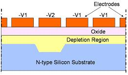

Charge-Coupled
Devices (CCD)
A
Charge-Coupled
Device,
or CCD, is basically an array of closely-spaced
metal-oxide-semiconductor (MOS) diodes that can store and transfer
information using packets of electric charge, or charge packets.
Applying the proper sequence of voltage pulses (clock signals) to a CCD
biases the array of MOS diodes into the deep depletion region where the
charge packets may be moved in a controlled manner across the
semiconductor substrate. Some people also refer to a CCD's MOS diodes as
'MOS capacitors.'
There are two basic
types of CCD, namely, the
surface channel CCD (SCCD)
and the
buried
channel CCD (BCCD). Charge is stored and transferred at the
semiconductor surface in the SCCD, while in the BCCD, the charge packets
are stored and transferred in the bulk semiconductor below the surface.
The semiconductor
substrate of a CCD may be n- or p-type. Over this semiconductor
substrate, silicon dioxide is grown as a dielectric or insulating layer.
An array of very closely-spaced metal electrodes is then formed over
this dielectric layer. This is why the CCD is considered a
MOS
device, i.e., its top to bottom layers are metal, oxide, and
semiconductor.
In an n-type CCD, grounding
the substrate and applying a negative voltage -V1 to all the
closely-spaced metal electrodes will create a
depletion region
in the substrate right beneath the oxide layer. This depletion
region is devoid of majority carriers (electrons), since these have been
repelled by the negative voltage applied at the electrodes. On the
other hand, some of the minority carriers (holes) present in the
substrate will be attracted towards this depletion region.
Applying a significantly
more negative voltage
-V2 at one of the electrodes while maintaining the other electrodes at
-V1 will cause the
depletion region
beneath the more negative electrode
(let's call it 'Ek')
to extend more deeply
(see Fig. 1). This deeper depletion region beneath Ek
creates a 'potential well'
that extends from the edge of the electrode
to its left to the edge of the electrode to its right. This 'potential
well' is the only region within the depletion region wherein a positive
charge may move about. Thus, placing a positive charge into this
potential well traps it there, since it can not move outside the well.
This, in essence, is how a CCD
stores a charge, and how it can be used
as a memory device.

Figure 1.
A simplified cross-section of a CCD
The
stored charge under the more negative electrode Ek (and the one which
has an extended depletion region) may actually be laterally
transferred
to the next adjacent electrode, Ek+1. This is done by also putting
Ek+1 at the more negative voltage -V2, while allowing Ek to adjust back
to -V1. While this is happening, all other electrodes (esp. Ek-1
and Ek+2) must be at -V1. As Ek ramps up to -V1, its potential
well becomes shallower, and all the trapped charges in it gets
transferred to the deeper potential well of Ek+1. Eventually the
charges previously stored by Ek will get stored in the potential well
Ek+1.
Moving
the charge packets from one electrode to the other in this manner
requires at least three electrodes to move one bit of information.
In any transfer cycle, one electrode is at -V2, another electrode is
ramping up from -V2 to -V1, and the third electrode is at -V1. The
lateral movement of charge packets in a CCD from one electrode to the
next is very similar to how
digital data move in a
shift register.
Although the
CCD was invented as a memory device, its extreme
sensitivity
to light
soon made it a popular choice as an
image sensor.
In an image-sensing CCD chip, each MOS diode or 'capacitor' represents
one pixel. The charge packets are generated when light excites electrons
in the valence band into the conduction band. The light-generated charge
packets that carry the image information are stored and transferred from
one potential well to another until they are eventually shifted out of
an output register. Most video cameras today use a CCD for its image
sensing requirements.
HOME
Copyright
©
2005
www.EESemi.com.
All Rights Reserved.